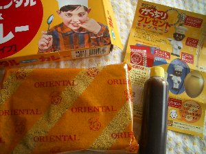
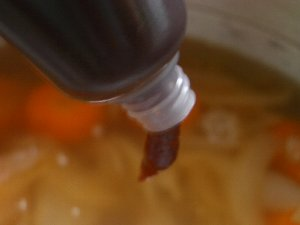
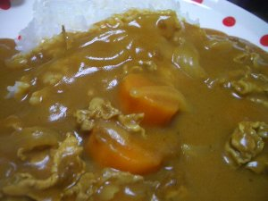

なないろまーぶる collection 
カレーグァバセット |
-番外編- オリエンタルカレー、食べたよっ！の巻 実食レポートです（笑） グッズが増えるまでの期間限定です。 レポートしたら、もっと美味しさがわかるのかな？余計わかんないのかな（爆） （オリエンタルさんの回し者ではありません＾＾； でもファンですよ。） いつも、名古屋に行ったとき、もしくはヴィレッジヴァンガードなんかで購入する のですが、しばらく名古屋にもヴィレッジにも行っていなくて、近所のスーパーにも ないなぁ。久しぶりに通販でも利用するかな〜、と思った矢先生協で発見しました！  マースカレー230ｇ。 オリエンタルカレーのルウ・チャツネ・応募ハガキ入り この応募ハガキに応募券（オリエンタル坊やのマーク）を貼って応募すると、 金のスプーンや金のティースプーンや、ストラップとか手ぬぐいとか当たったり するのです＾＾しかし、たまに当たり券なるものが入っているのです！ それを使うと100％当たり！ すごーいっ。 さて、当たるかな〜♪ ･･･今回は、ハズレでしたorz ざんね〜ん（笑） 次回に期待。 さてさて、つくろうかな♪ -材料- 玉ねぎ<適量> にんじん<適量> じゃがいも<適量> 豚肉<適量> 水<適量> オリエンタルチャツネ<一本> オリエンタルカレーのルウ<一袋> （何だ、この適当さ（´Д｀；） 私は適当人間です。申し訳ない。） -作り方- 1.玉ねぎを炒める 2.豚肉を炒める 3.にんじんを炒める 4.水を入れる 5.オリエンタルチャツネを入れる  このチャツネは、とても甘くてフルーティーです。 マンゴー、リンゴなどからできてます。とろとろに煮込んであるんですよ＾＾ 6.材料がやわらかくなるまで煮込んだら、ルウを何回かに分けて入れる ルウがとろとろしてきたら、完成♪  できた♪ 料理苦手な私でも、簡単につくれました＾＾ このオリエンタルマースカレーは、香辛料のよい辛味があり、チャツネによって まろやかになります。他のルウでカレーを作るときは、何種類か混ぜるのですが これは混ぜなくてもそのままで旨いです。 オリエンタルカレー、食べたよっ！の巻 おわり♪ オリエンタル坊やindex Copyright(c) 2008 ふるいかめら |